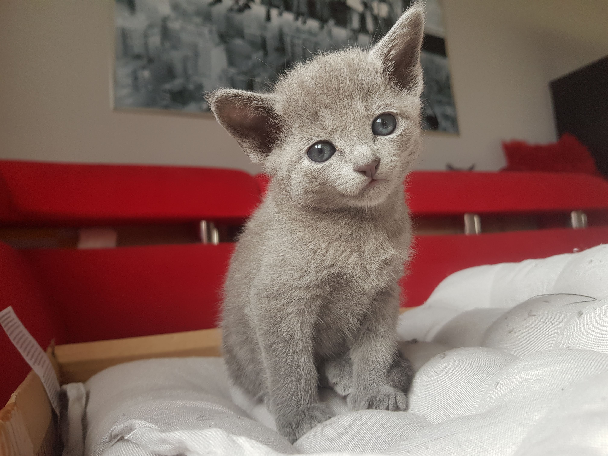

Trochę o tych słodkich kotkach
Kot rosyjski niebieski to elegancki, filigranowy zwierzak o pluszowym futerku i szmaragdowych oczach. Choć obecnie jest mniej popularny niż przed laty, ma grono zagorzałych miłośników. Nic dziwnego – jego urok, inteligencja i wspaniały charakter potrafią podbić serca.
Kot rosyjski niebieski to rasa dosyć stara. Zaliczana jest do ras naturalnych, choć były momenty w historii, w których hodowcy dla ratowania rasy musieli posiłkować się ich krzyżówką z innymi kotami. Tradycyjnie jako kolebkę kota rosyjskiego uznaje się okolice Archangielska – miasta portowego w północnej Rosji. To zapewne z tego ośrodka handlu międzynarodowego Rosji carskiej kot rosyjski został przywieziony do Europy Zachodniej.
Jest zwierzęciem o budowie niezwykle harmonijnej, proporcjonalnej. To chodząca elegancja. Jest to kot średniej wielkości, ważący zwykle od 2,5 do 4,5 kg. Smukły, lecz dobrze umięśniony, o wydłużonej sylwetce, długiej i prostej szyi, kot rosyjski jest pełen gracji. Jego głowa jest nieduża, w kształcie krótkiego klina, proporcjonalna do reszty ciała. Czoło powinno być płaskie, nos prosty, broda mocna, a poduszki z wibrysami mocno zaznaczone.
Uszy kota rosyjskiego są duże, szerokie u podstawy, osadzone wysoko. Wydają się być niemal przezroczyste – ich cienka skóra pokryta jest z zewnątrz jedynie delikatnymi jak meszek, srebrzystymi włoskami.
Oczy kota rosyjskiego momentalnie przykuwają uwagę obserwatora. Duże, szeroko rozstawione, w kształcie migdałów, mają kolor szmaragdowozielony. Tęczówki młodych kotów mogą wybarwiać się przez dłuższy czas, zanim osiągną ostateczny kolor, dlatego u kotów do pierwszego roku życia możliwy jest kolor żółtawy.
Futerko kota rosyjskiego niebieskiego jest jedyne w swoim rodzaju. U większości kotów włosy okrywowe, czyli zewnętrzne, tworzące wzór sierści, są najdłuższe, natomiast podszerstek (włosy puchowe), czyli warstwa chroniąca kota przed zimnem, tworzą włosy najkrótsze. Kot rosyjski niebieski ma podwójne futerko – jego włosy puchowe są takiej samej długości, co okrywowe, dlatego jego sierść doskonale izoluje ciało przed zimnem i wilgocią oraz jest wyjątkowo miękka, przyjemna w dotyku, aksamitna. Powinna odstawać od ciała.
Umaszczenie kota rosyjskiego jest szaroniebieskie z charakterystycznym, srebrzystym połyskiem, dlatego czasem przedstawiciel tej rasy jest nazywany kotem rosyjskim srebrnym. Dopuszczalny jest każdy odcień koloru niebieskoszarego, ale preferowany jest odcień średni, wyważony – przynajmniej w większości krajów Europy oraz w Wielkiej Brytanii. Koty rosyjskie typu skandynawskiego najczęściej są ciemniejsze, natomiast w USA preferuje się te jasno ubarwione.